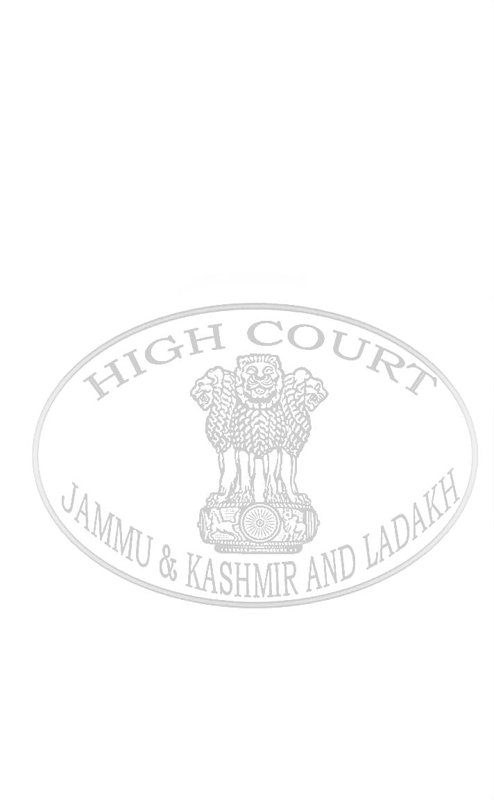

Serial No. 50
Regular Cause list
HIGH COURT OF JAMMU & KASHMIR AND LADAKH
AT SRINAGAR
CCP(S) 80/2026 in [WP(C) 383/2026]
GHULAM HASSAN MALIK …Appellant(s)/Petitioner(s)
Through: Ms. Arifa Jan, Sr. Advocate with
Ms. Moomina, Advocate
Vs.
AKSHAY LABROO(IAS) DEPUTY
...Respondent(s)
COMMISSIONER AND OTHERS
Through: Mr. Faheem Nisar Shah, GA
CORAM:
HON'BLE MS. JUSTICE MOKSHA KHAJURIA KAZMI, JUDGE.
ORDER
10.08.2026
1. Registry is directed to list the instant petition with WP(C) 1373/2023 titled "Shakuntala Bhan Vs. UT of J&K & Ors." on 01.09.2026.
2. Learned counsel for the respondents is directed to produce the record with respect to the subject matter of the instant petition on the next date of hearing.
(MOKSHA KHAJURIA KAZMI) JUDGE
SRINAGAR: 10.08.2026 "Adil Ismail"
